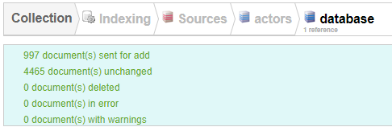
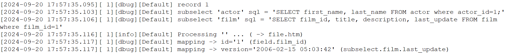
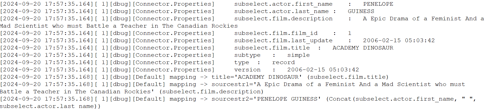

There should be 997 documents sent for add.
21. Go to the Status tab and download the Connector log.
The sub-queries plus the id and version mapping are at the beginning of each record retrieval.
The late mappings, which include the sub-query data, are at the end of each record.
Summary
You should now be able to:
• Describe what sub-queries are and how they are used.
• Configure the database connector to run with a sub-query.
____________
9/9